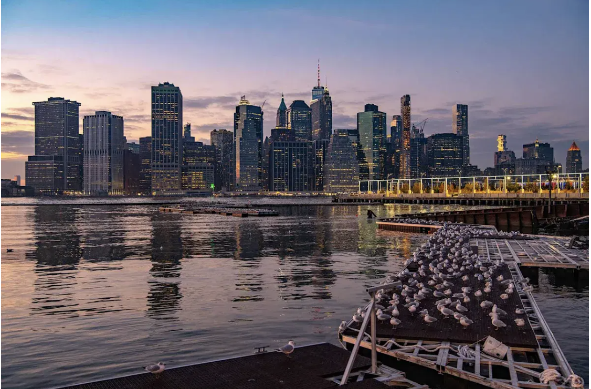
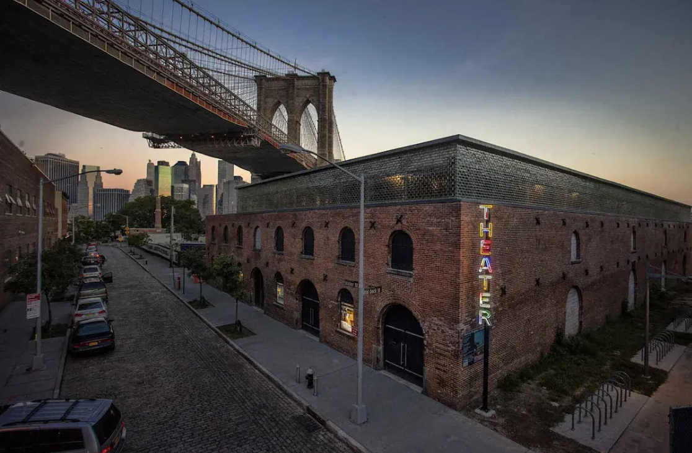
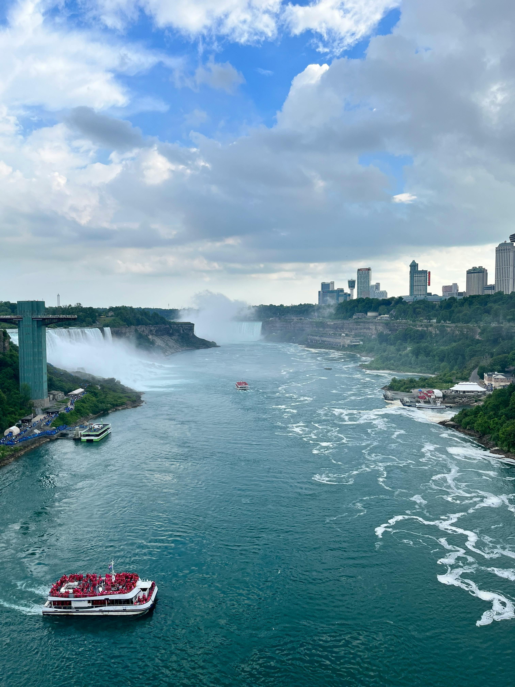
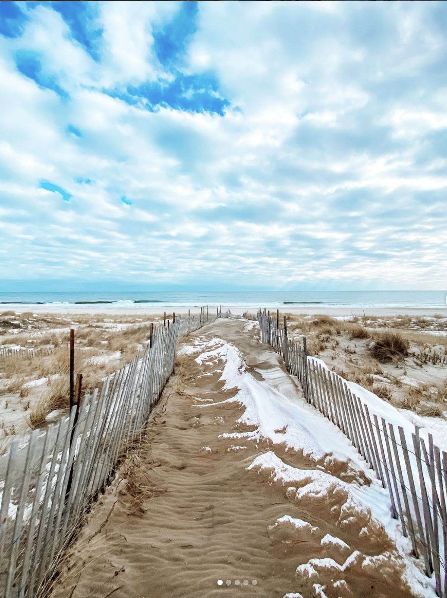
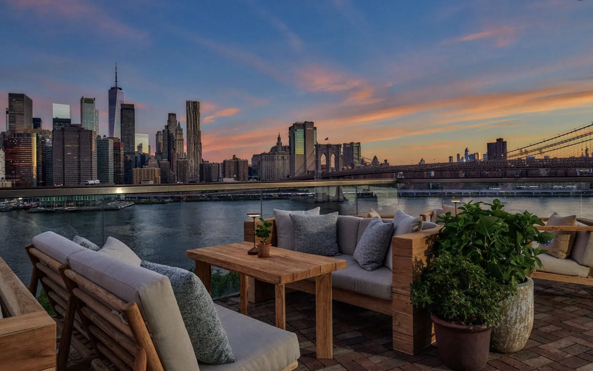

New York City clássica
Para quem quer skyline, museus, compras, bairros famosos, observatórios, Broadway e a energia que faz a cidade ser uma das portas de entrada mais desejadas dos Estados Unidos.
Se você está decidindo entre New York City, Broadway, Natal, Niagara Falls, Long Island ou um roteiro mais amplo pelo estado, esta página te ajuda a escolher melhor por onde começar, quando vale abrir o itinerário e como viajar melhor em 2026.
Antes de escolher hotel, estação do ano ou extensão de roteiro, vale ver o episódio do canal. Ele ajuda a entrar no clima do destino e entender por que o Estado de Nova York não se resume a uma única cidade.

Um ponto de partida para sentir a energia da viagem e começar a decidir se o foco deve ficar em New York City ou se vale abrir espaço para outras regiões do estado.
O Estado de Nova York pode ser urbano, natalino, sofisticado, cênico, litorâneo ou totalmente voltado para estrada e natureza. O segredo é não tratar tudo como a mesma viagem.
Para quem quer skyline, museus, compras, bairros famosos, observatórios, Broadway e a energia que faz a cidade ser uma das portas de entrada mais desejadas dos Estados Unidos.
Se a viagem gira em torno de vitrines, Rockefeller Center, patinação, luzes e clima de fim de ano, o inverno vira o protagonista do roteiro.
Niagara Falls, Long Island, escapes costeiros, folhagens de outono e interior ajudam a montar um roteiro mais rico e menos óbvio.
O site oficial de turismo de Nova York reforça alguns ganchos muito bons para quem vai viajar este ano: o clima de Copa do Mundo na região, os programas 2 por 1 de Broadway e atrações e a temporada de inverno com promoções oficiais.
A região de Nova York/Nova Jersey recebe oito jogos, incluindo a final em 19 de julho. Isso deixa o verão ainda mais intenso e faz sentido entrar no radar de quem quer viajar nesse período.
Os programas oficiais 2 por 1 continuam sendo ótimos para encaixar shows e atrações pagando melhor — especialmente se você quer viver muito da cidade sem gastar de forma desordenada.
No começo do ano, Nova York costuma reforçar suas campanhas de hotéis, restaurantes, Broadway e atrações. Para quem viaja no inverno, isso pode fazer bastante diferença no custo final.
Em vez de tentar fazer tudo, vale entender quais regiões entram bem no seu tempo, no seu orçamento e no tipo de experiência que você quer viver.

A cidade continua sendo a camada mais clássica do estado: bairros famosos, skyline, observatórios, museus, compras, restaurantes, parques e a sensação de estar numa das cidades mais filmadas do planeta.

Brooklyn, DUMBO, ferries e vistas de Manhattan ajudam a viver uma Nova York mais aberta, mais fotogênica e menos presa só ao eixo turístico clássico.
Broadway continua sendo um ótimo motivo de viagem. Em 2026, os períodos promocionais oficiais seguem muito fortes para encaixar shows pagando melhor.
Vitrines, Rockefeller Center, pistas de patinação, compras e aquele clima que faz muita gente montar a viagem inteira em torno do fim de ano.

Uma extensão forte para quem quer escala, água e paisagem. Faz mais sentido quando a viagem tem dias extras ou quando Manhattan não precisa ocupar tudo.

Uma boa escolha para quem quer uma Nova York mais leve, mais litorânea e menos vertical — especialmente no verão ou em viagens repetidas.

O estado também funciona muito bem para montanhas, rios, cidades menores e a mudança de cor das folhas no outono.
Quando você sai da lógica do checklist, o destino abre outra camada: rooftops, parques à beira d’água, ferries, bairros com mais personalidade e hotéis que mudam bastante a sensação da viagem.

Em Nova York, a escolha do hotel e da base muda muito a viagem. Localização, vista, ritmo e bairro importam quase tanto quanto as atrações.
A cidade também respira nos piers, nos ferries e nos espaços abertos. Isso faz muita diferença quando você quer desacelerar entre um bairro e outro.
Posso te ajudar a decidir se o foco deve ser New York City, Broadway, Natal, Niagara Falls, Long Island ou uma combinação mais ampla dentro do Estado de Nova York — com estrutura compatível com o seu perfil e orçamento.